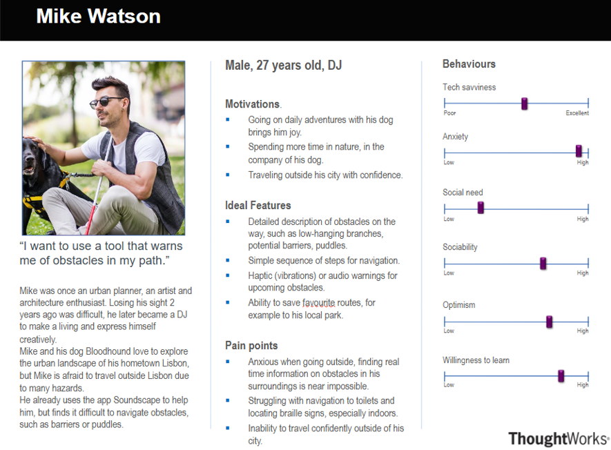

Requirements
Project Background
Go into the brief history of this project the background. I dont realy know what to write for this
Project Goals
The lack of reliable, up-to-date accessibility information in urban environments. Many individuals with mobility challenges struggle to navigate cities due to missing or inaccurate data about ramps, elevators, and obstacle-free pathways. By leveraging Team 15’s expertise in machine learning and satellite imagery analysis, we are tackling this problem directly. Their ability to extract and interpret accessibility-related features from satellite data allows us to fill critical information gaps. Integrating these insights into our widget ensures that users receive real-time, precise data, reducing uncertainty and frustration when planning routes. This partnership is focused on solving a tangible issue—helping people move through urban spaces safely and efficiently by providing the accessibility information they need when they need it.
Our project aims to create a comprehensive data layer for accessibility, empowering users to navigate urban environments with confidence and ease. We will develop an intuitive widget that developers can seamlessly integrate into their websites, supported by detailed documentation. This widget will incorporate advanced location services and data visualization tools to enhance usability.
Our goals are divided into technical and non-technical objectives to ensure a holistic approach to accessibility:
Technical Goals: Solving Existing Problems
- Address Fragmented Data: Many cities lack centralized, up-to-date accessibility data. Our system will aggregate and standardize this information into a single, reliable data layer.
- Overcome Integration Challenges: Developers often struggle to implement accessibility features due to poor documentation or complex APIs. We will provide a lightweight, easy-to-integrate widget with clear, developer-friendly documentation.
- Improve Real-Time Navigation: Existing navigation tools often fail to account for real-time obstacles like construction or temporary barriers. Our system will provide dynamic updates to ensure users always have the most accurate information.
- Enhance Data Accuracy: Outdated or incomplete accessibility data is a common issue. We will use crowdsourcing and community input to keep our data layer accurate and up-to-date.
- Ensure Cross-Platform Compatibility: Many accessibility tools are limited to specific platforms. Our solution will be interoperable with existing mapping and navigation systems, ensuring broader usability.
Non-Technical Goals: The Bigger Picture
- Empower Independence: Enable individuals with disabilities to navigate urban environments confidently, reducing reliance on others and fostering greater independence.
- Build a Community-Driven Platform: Create a space where users can share their experiences, insights, and knowledge about navigating the city, fostering a sense of community and collaboration.
- Advocate for Inclusivity: Promote the importance of accessibility as a fundamental right, encouraging governments, businesses, and organizations to prioritize inclusive design.
- Inspire Systemic Change: Demonstrate the value of accessibility solutions, inspiring other organizations to adopt similar initiatives and integrate inclusivity into their core values.
- Foster a Culture of Accessibility: Shift societal perceptions of accessibility from an afterthought to a necessity, ensuring that future urban planning and development prioritize inclusivity.
Through this initiative, we aim to deliver a robust and accessible tool that significantly improves the navigation experience for wheelchair users and others with mobility challenges. By solving existing technical problems and addressing the bigger picture of inclusivity, we hope to create a future where accessibility is seamless, empowering, and universally prioritized.
Requirement Gathering Process
Our goal was to ensure the HCI component met diverse user needs, focusing on accessibility and inclusivity. This section outlines our methods for collecting, analyzing, and prioritizing user requirements.
Methods of Requirement Collection
We conducted semi-structured interviews with software engineers and visually impaired individuals to gather detailed insights into their needs and challenges. Software engineers discussed technical challenges and API requirements, while visually impaired individuals focused on accessibility needs and navigation challenges. Regular consultations with stakeholders helped integrate their feedback and evolving needs into the project.
What are some common challenges that you face when navigating public spaces?
One of the biggest challenges is the lack of information about my surroundings. It's difficult and scary to navigate an area that you are not familiar with.
Do you use any GPS apps and if so, do they address your challenges appropriately?
I use common applications like Google and Apple Maps, but they don't provide enough information about things like locations of staircases, entrances, barriers, etc. There isn't enough for people with special accessibility needs.
Would you find it helpful to have certain tags and markers on a map indicating these types of objects?
Yes, that would be very helpful.
What would be your preferred way of interacting with this app?
A mobile interface would be most convenient and portable for me. In addition, I would prefer if there was an audio description feature accompanying a UI with accessibility features (e.g. large text, contrast in colours, etc.).
What challenges do you face with location-based applications?
Handling varying data sources and making sure it is accurate, structured data for different use cases is a major challenge. Especially when dealing with different resolutions or temporary obstacles.
How do you typically manage geospatial data?
I use APIs like Google Maps and OpenStreetMap, along with tools like what3words for precision. The challenge is integrating and presenting this data, especially with varying resolutions.
What features would be helpful in an API for your projects?
An API should support multiple data layers, allow querying by location, handle grid-based data with adjustable resolutions, and support metadata like reliability or expiry dates.
How should data be displayed in a frontend widget?
A map interface with clear markers, voice input, and location-based search would be ideal. Users should easily toggle between layers.
Would you find features like temporary object flags or voice search useful?
Yes, these features would enhance usability and ensure accurate, dynamic data, especially in real-time environments.
We identified common themes from the interviews, such as location-based application challenges, API flexibility, and frontend requirements.
We faced several challenges during the requirement gathering process, including balancing technical robustness and accessibility, and ensuring accuracy across multiple data sources.
From our analysis, we gained several key insights, such as the critical need for features like audio descriptions and high-contrast UI for accessibility, and the importance of adjustable grid resolutions and multiple data layers for API flexibility.
Our iterative requirement gathering process, involving interviews and stakeholder consultations, allowed us to gather detailed insights and prioritize them effectively. This ensured our HCI component would be accessible and technically robust, meeting diverse user needs.
Personas
This section will describe the typical users of the project.

Use Cases
This section will include a use case diagram and a list of use cases.
References
IEEE style: reference definition needs the number. IEEE citation reference definition.

Reference 1: [1] Author, "Title," Journal, vol. X, no. X, pp. X-X, Year.
Reference 2: [2] Author, "Title," Journal, vol. X, no. X, pp. X-X, Year.
Reference 3: [3] Author, "Title," Journal, vol. X, no. X, pp. X-X, Year.